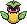

日光束Solar Beam
- 屬性
- 草
- 分類
- 特殊
- 威力
- 120
- 命中
- 100%
- SP
- 60
- 冷卻
- 2.6 秒（特殊組）
- 範圍
- 直線
- 距離
- 6 格
- 段數
- 1
- 前搖
- 2 秒
- 接觸
- 否
招式分類跟隨招式的 屬性 （第三世代規則，與火紅／葉綠相同）：火、水、草、電、超能力、冰、龍、惡屬性招式一律是特殊招式；其他屬性是物理招式（例外：分擔痛楚）。因此暗影球是物理招式，攀瀑是特殊招式。這是刻意設計，不是錯誤。
即時戰鬥效果
第 1 回合蓄力（大晴天時立即發動）。
命中直線上的所有敵人。
即時戰鬥設計備註：
- 合理，維持原案。
升級時學會
招式光碟
 草屬性招式光碟 ・超稀有（每打倒一隻該屬性寶可夢 0.012%，由 5 個招式分配）
草屬性招式光碟 ・超稀有（每打倒一隻該屬性寶可夢 0.012%，由 5 個招式分配）
可以教會 147 隻寶可夢：
 妙蛙種子
妙蛙種子 妙蛙草妙蛙花
妙蛙草妙蛙花 巴大蝶
巴大蝶 大針蜂
大針蜂 皮皮
皮皮 皮可西
皮可西 胖丁胖可丁
胖丁胖可丁 走路草
走路草 臭臭花霸王花
臭臭花霸王花 派拉斯
派拉斯 派拉斯特毛球
派拉斯特毛球 摩魯蛾
摩魯蛾 喇叭芽
喇叭芽 口呆花
口呆花
大食花 小火馬
小火馬 烈焰馬
烈焰馬 蛋蛋
蛋蛋 椰蛋樹
椰蛋樹 大舌頭
大舌頭 吉利蛋
吉利蛋 蔓藤怪
蔓藤怪 袋獸
袋獸 魔牆人偶
魔牆人偶 肯泰羅
肯泰羅 多邊獸
多邊獸 卡比獸
卡比獸 超夢
超夢 夢幻菊草葉
夢幻菊草葉 月桂葉
月桂葉 大竺葵
大竺葵 尾立
尾立 大尾立
大尾立 芭瓢蟲
芭瓢蟲 安瓢蟲
安瓢蟲 圓絲蛛
圓絲蛛 阿利多斯
阿利多斯 皮寶寶
皮寶寶 寶寶丁
寶寶丁 波克比
波克比 波克基古
波克基古 天然雀
天然雀 天然鳥
天然鳥 美麗花
美麗花 毽子草
毽子草 毽子花毽子棉
毽子花毽子棉 長尾怪手
長尾怪手 向日種子
向日種子 向日花怪
向日花怪 蜻蜻蜓
蜻蜻蜓 榛果球
榛果球 佛烈托斯
佛烈托斯 土龍弟弟
土龍弟弟 布魯
布魯 布魯皇
布魯皇 戴魯比
戴魯比 黑魯加
黑魯加 多邊獸Ⅱ
多邊獸Ⅱ 驚角鹿
驚角鹿 大奶罐
大奶罐 幸福蛋
幸福蛋 炎帝
炎帝 鳳王
鳳王 時拉比
時拉比 木守宮
木守宮 森林蜥蜴
森林蜥蜴 蜥蜴王
蜥蜴王 狩獵鳳蝶
狩獵鳳蝶 毒粉蛾
毒粉蛾 蓮葉童子
蓮葉童子 蓮帽小童
蓮帽小童 樂天河童
樂天河童 橡實果
橡實果 長鼻葉
長鼻葉 狡猾天狗
狡猾天狗 溜溜糖球
溜溜糖球 雨翅蛾
雨翅蛾 蘑蘑菇
蘑蘑菇 斗笠菇
斗笠菇 懶人獺
懶人獺 過動猿請假王
過動猿請假王 土居忍士
土居忍士 鐵面忍者
鐵面忍者 脫殼忍者
脫殼忍者 咕妞妞
咕妞妞 吼爆彈
吼爆彈 爆音怪
爆音怪 向尾喵
向尾喵 優雅貓
優雅貓 大嘴娃
大嘴娃 波士可多拉
波士可多拉 電螢蟲
電螢蟲 甜甜螢
甜甜螢 毒薔薇
毒薔薇 溶食獸
溶食獸 吞食獸
吞食獸 大顎蟻
大顎蟻 超音波幼蟲
超音波幼蟲 沙漠蜻蜓
沙漠蜻蜓 刺球仙人掌
刺球仙人掌 夢歌仙人掌
夢歌仙人掌 青綿鳥
青綿鳥 七夕青鳥
七夕青鳥 貓鼬斬
貓鼬斬 太陽岩
太陽岩 天秤偶
天秤偶 念力土偶觸手百合
念力土偶觸手百合 搖籃百合
搖籃百合 飄浮泡泡
飄浮泡泡 變隱龍
變隱龍 熱帶龍
熱帶龍 草苗龜
草苗龜 樹林龜
樹林龜 土台龜
土台龜 烈焰猴
烈焰猴 含羞苞
含羞苞 羅絲雷朵
羅絲雷朵 結草貴婦紳士蛾
結草貴婦紳士蛾 櫻花寶
櫻花寶 櫻花兒
櫻花兒 雙尾怪手
雙尾怪手 捲捲耳
捲捲耳 長耳兔
長耳兔 銅鏡怪
銅鏡怪 青銅鐘
青銅鐘 魔尼尼
魔尼尼 小福蛋
小福蛋 小卡比獸
小卡比獸 尖牙籠
尖牙籠 雪笠怪
雪笠怪 暴雪王
暴雪王 大舌舔
大舌舔 巨蔓藤鴨嘴炎獸
巨蔓藤鴨嘴炎獸 波克基斯
波克基斯 遠古巨蜓
遠古巨蜓 葉伊布
葉伊布 多邊獸Ｚ
多邊獸Ｚ